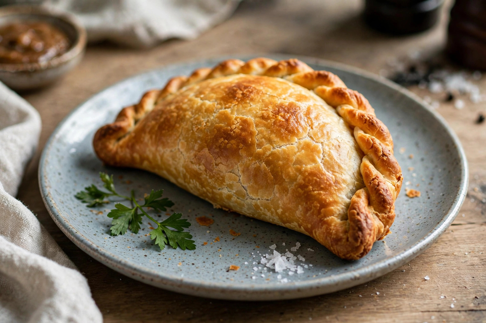

From Wikipedia, the free encyclopedia
| Cornish pasty | |
|---|---|
 | |
| Type | Meat pie |
| Place of origin | Cornwall, England |
| Main ingredients | Shortcrust pastry; beef, swede, potato, onion |
A Cornish pasty is a British baked pastry, a traditional variety of pasty associated with Cornwall in South West England. It is made by placing an uncooked filling of beef, sliced potato, swede, and onion on one half of a shortcrust pastry circle, folding the pastry over, and crimping the edge to form a seal. Since 2011 the "Cornish pasty" has had Protected Geographical Indication status in the European Union.
The pasty became the iconic meal of Cornish tin miners, who carried it underground as a complete, portable lunch. The thick crimped edge served as a handle that could be held with dirty hands — potentially contaminated with arsenic from the mines — and then discarded. Folklore holds that miners left the last crust for the "knockers", spirits said to inhabit the mines.
Under the PGI rules, a Cornish pasty must be made in Cornwall, contain roughly 12.5% beef and at least 25% vegetables, with all ingredients raw when assembled. The crimp must be on the side, never on top. Commercial production is a significant industry, and pasties are sold across the United Kingdom and exported worldwide, including to Mexico, where Cornish miners introduced them to the mining town of Real del Monte in Hidalgo.